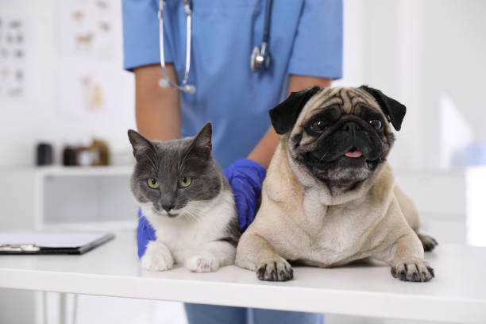

Bienvenidos a nuestro centro veterinario
La salud y felicidad de tus mascotas es nuestra prioridad
En Veterinaria "La Mary", nos dedicamos a brindar el mejor cuidado para tus mascotas. Nuestro equipo de profesionales está comprometido con la salud y el bienestar de tus animales.
Ofrecemos una amplia gama de servicios veterinarios, desde consultas y vacunaciones hasta cirugías y hospitalización. Además, contamos con una tienda de alimentos y accesorios para mascotas.
Pedir CitaServicios
- Consultas veterinarias
- Vacunación y desparasitación
- Cirugías y procedimientos
médicos - Hospitalización y cuidados
intensivos - Venta de alimentos y accesorios
para mascotas
Sobre Nosotros
Veterinaria Darwin cuenta con años de experiencia en el cuidado de mascotas. Nuestro objetivo es ofrecer un servicio integral que garantice la salud y felicidad de tus animales.
Contamos con un equipo de veterinarios altamente capacitados y apasionados por su trabajo, que se esfuerzan por brindar la mejor atención a cada paciente.